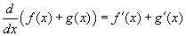

This device cannot display Java animations. The above is a substitute static image
1. A simple sum
The example shows three graphs: f (x) = x, g (x) = x2, and h (x) = f (x) + g (x). There is also a tangent line on each graph, the position of which is controlled by the x slider. Text at the bottom of each graph shows the value of the function at the current x position. Note that the value of h (x) is just the sum of the values of f (x) and g (x), as you can verify by adding the f and g values. Now, look in the top right corner of each graph, which shows the slope of the tangent line. The slope for the tangent line of f is constant, since f is a straight line, but the slope of g changes as you change x.
What is the slope of the tangent line for h? How does it relate to the slopes for f and g?
2. A more complex sum
Select the second example, showing a parabola and a sine curve. How is the slope of h's tangent line related to the slopes of f and g? It appears that the slope of h is just the sum of the slopes of f and g. You can try some more examples by typing different functions in for f and g. You can even create your own graph by clicking one or both of the "Use Mouse" check boxes. The graph now shows a straight line with some small squares. Click and drag one of these squares to change the shape of the function. You can move them up and down to create a really curvy graph! Then, move the slider and see if the slope of h is still the sum of the slopes of f and g.
The general rule is

or, in other words, the derivative of a sum is the sum of the derivatives.
3. A difference
Select the third example. This is just like the second example, but now h is defined as the difference between f and g. How is the slope of h related to those of f and g? If you play with the slider and maybe try some of your own function definitions for f and g, you should find that the derivative of a difference is just the difference of the derivatives, or
4. A product of two functions
Select the fourth example, showing the product of f and g. Is the slope of h the product of the slopes of f and g? It doesn't look like it. You can really see something isn't right if you set x = 0.5. Here the slope of f is 1, but the slope of h is not the same as the slope of g!
So the derivative of a product of two functions isn't the product of the derivatives, but something more complex (which we will see later). If you edit the definition of h to be f (x) / g (x), you will quickly see that the derivative of the quotient of two functions is also not so simple. Lastly, try making h (x) = f (g (x)) and play around; you will notice that function composition is also more complex than sums and differences.
Other differentiation topics
(C) 2011 Copyright Math Open Reference.
All rights reserved